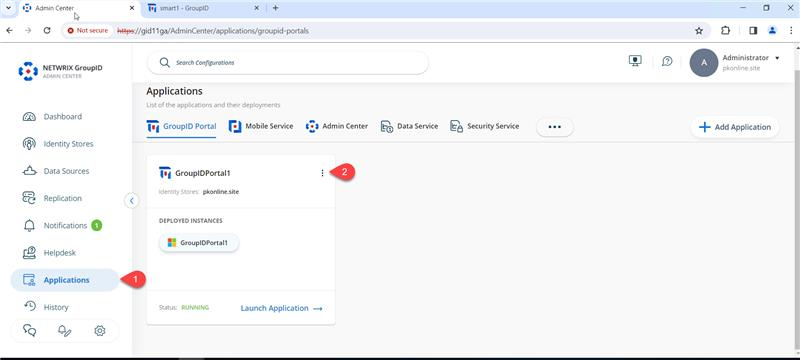
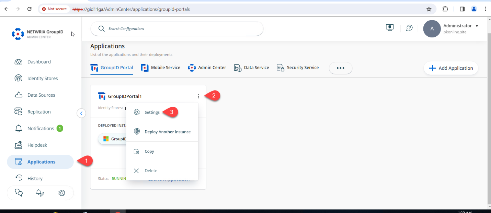
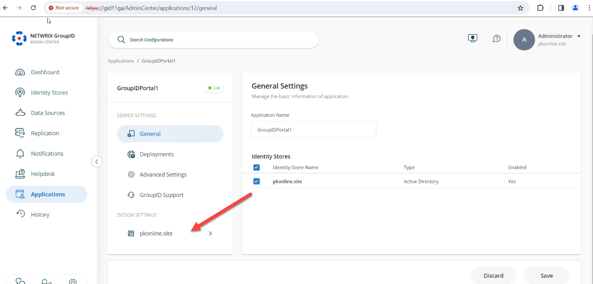
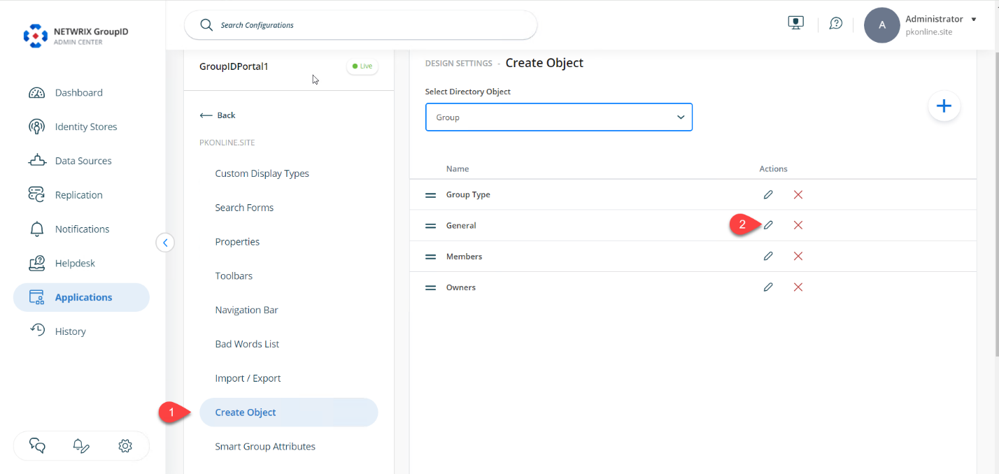
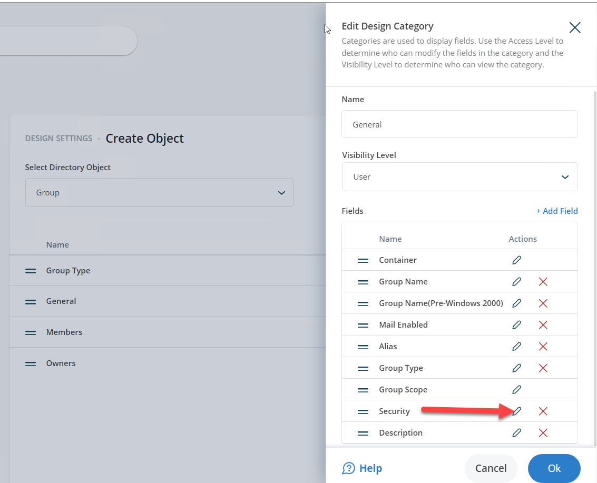
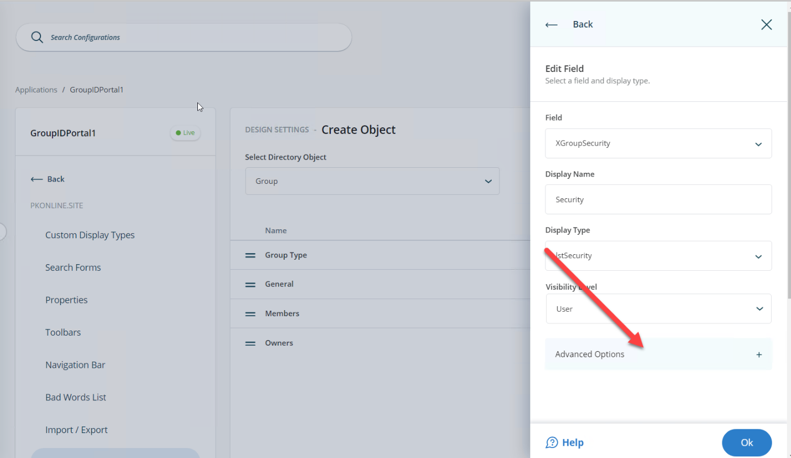
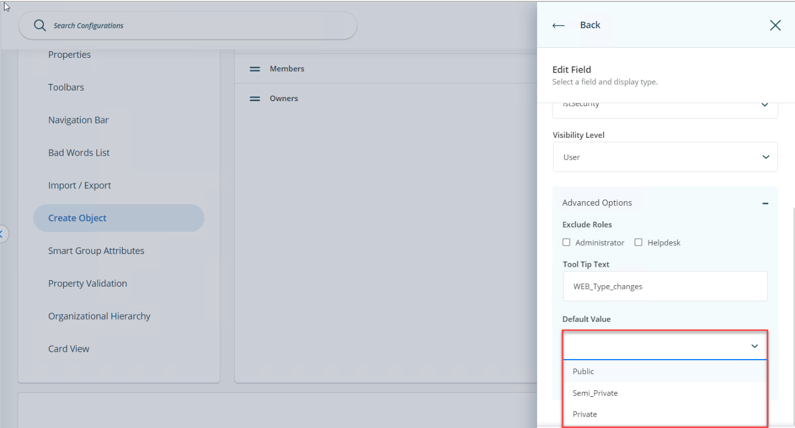
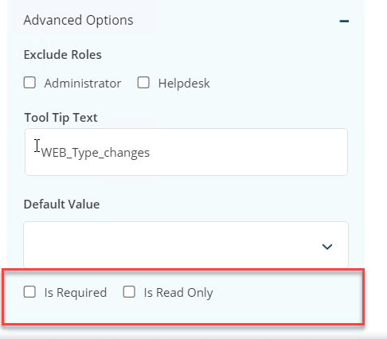
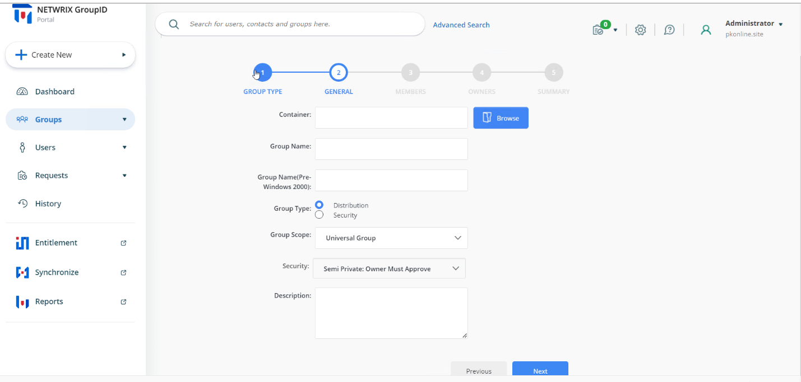
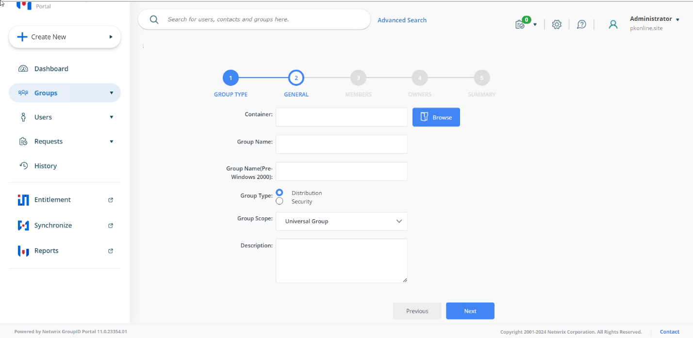

Applies To
Directory Manager 11
Overview
By default, users can choose from several security types when creating a group in the Netwrix Directory Manager (formerly GroupID) 11 user portal. You can configure the portal to set semi-private as the default security type in the Create Group wizard. You also have the option to allow users to select a different security type or to enforce the default for all users.
Instructions
-
Open the Directory Manager Admin Portal at
https://servername/AdminCenter/. Navigate to Applications, select your desired portal, and click the three dots (...) to edit it.
 -
Click Settings.
 -
Under Design Settings, click your identity store’s name.
 -
On the Create Object tab, select Group from the
Select Directory Object drop-down list.
 - In the Name list, select General and click Edit.
-
In the Edit Design Category dialog box, select
Security and click Edit.
 -
In the Edit Field dialog box, click the
Advanced options link.
 -
Select Semi_Private from the Default Value drop-down list.
 -
Optional: To enforce the semi-private security type, select the Is Read-Only
check box. This action disables the Security drop-down list in the
Create Group wizard and displays only the default value.

 -
Optional: To hide the Security drop-down list from a specific role,
select the desired role (such as Administrator or
Helpdesk) from the Visibility Role drop-down list. The
Security drop-down list is visible to users of the selected role and to
roles with a higher priority value, but hidden from all roles with a lower priority
value.
 - Click OK to close the dialog boxes then save your changes.